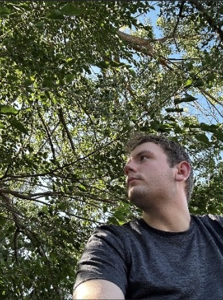

About Me

My Background
I am married and currently a Software Engineering student at BYU-Idaho, working my way through the core coursework. My long-term professional goal is to work in backend software engineering.
Future Goals
My specific backend development interests lie in systems and architecture focus. My ultimate career target is working with the Church ICS (Information Communication Services) department.
